Windows 8.1 RT: 新しい SkyDrive は新しかった
公開日：
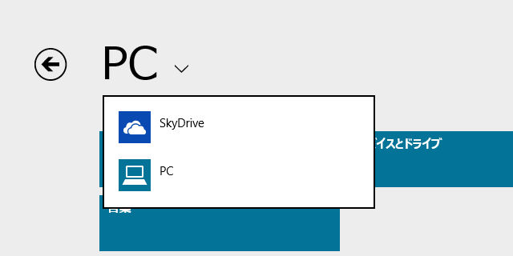
Windows 8.1*1 では SkyDrive がシステムに組み込まれ、PC（ローカルストレージ）と並ぶ“第一級ストレージ”になっている。あくまでも“追加ストレージ”だった Windows 8.0 以前とは、仕組みも機能も重要性もまったく異なる。
Windows 8.1 の SkyDrive を構成するモノ
とりあえず、今回登場するプレイヤーを紹介しておこう。
SkyDrive.exe
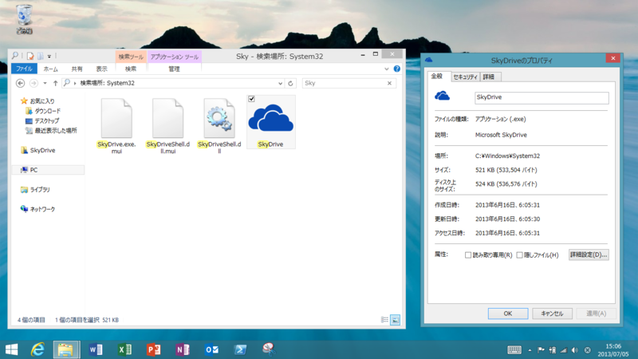
これまで AppData でほかの一般社員と机を並べて働いていたが、 今回の組織改編では Windows 直属の System32 という社内の最重要部署にデスクを与えられた。やる気満々の若手ホープ。
FileManager.exe
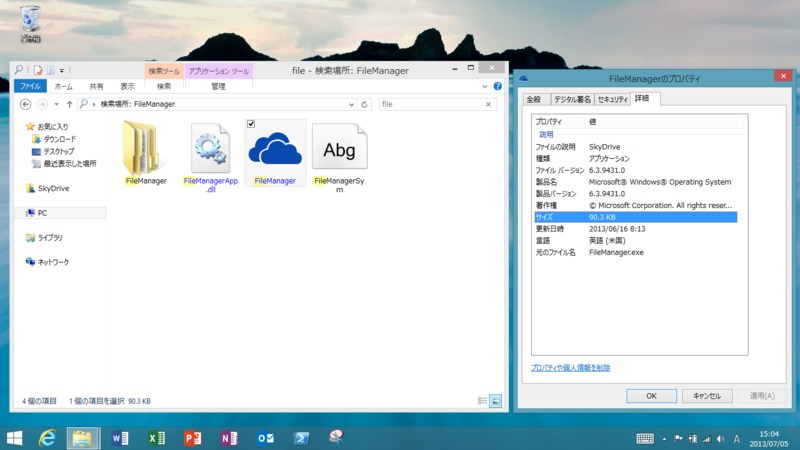
今年採用された新入社員*2。なんと Windows フォルダ在住で、自分だけのフォルダまでもっている。今のところその任務は明らかではないが*3、なにか極秘の命令を受けて独自に行動しているのは確かだ。
（もしかしたら、これってストア アプリ「SkyDrive」の実体なのかなぁ。そういえば、「SkyDrive」ってなぜか「タスク マネージャー」の［アプリの履歴］タブに出てこない。そういう意味でも、ちょっと特殊な作りなんだな）
［PC の設定］－［SkyDrive］
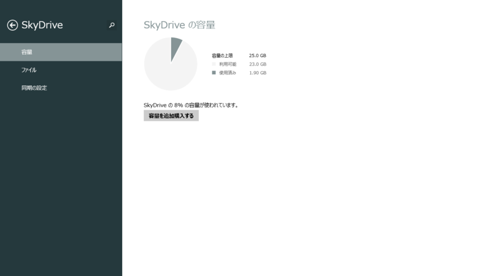
裏でコソコソ働くのを好む根暗な SkyDrive.exe と FileManager.exe の世話をみる母親的存在。やさしくタッチしてあげると、彼らに言伝てしてくれる。
Windows ストア アプリ「SkyDrive」
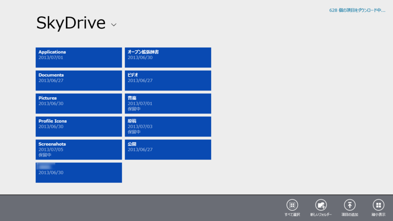
忘れてはいけないのは、Windows ストア アプリの「SkyDrive」さん。イマーシブアプリからのアクセス要求をすべてサバく、メガネっ娘のかわいらしい事務職。今回のシステムアップデートではローカルドライブとの同期にも関わることになったので、かなり忙しくなりそう。
まったく新しくなった同期の仕組み
Windows 8.0 の SkyDrive では、以下の二つの機能が利用できた。
- すべてを同期
- フォルダを選択して同期（窓の杜 - 【NEWS】デスクトップ向け「SkyDrive」がアップデート、同期するフォルダを選択可能に）
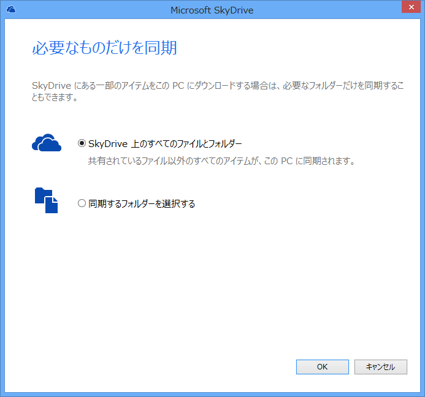
どちらを利用するかはセットアップ時に選択できるし、あとから変更することもできる。
一方、Windows 8.1 の SkyDrive では以下の二つが利用できる。
- オンラインで利用する（初期設定）
- 常にオフラインで利用する
オンラインで利用する場合、ファイルはオンデマンドでダウンロードされるため、ネットワークにつながっていないと利用できない。「エクスプローラー」ではあたかも C:\Users\***\SkyDrive にファイルが存在するようにみえるが、実際はファイルエントリを示しているだけのようだ。
要するにリアルなファイルシステムではなく、バーチャルなファイルシステムになっている。
（正確にいうと、リパースポイントと呼ばれる機能が利用されている。この機能は Windows 2000 出はじめて搭載された）
実際のファイルを同期（直接同期）するオンラインストレージとしては、以前の SkyDrive や Dropbox が挙げられる。仕組みは比較的シンプルだが、ファイルそのものをストレージに保存するため、そのファイル分だけローカルストレージを消費してしまう。フォルダ単位の選択同期はそれを解決する一つの手段だが、それでもユーザー側で同期するフォルダと同期しないフォルダを管理しなければならない。
仮想ファイルシステムの仕組み（間接同期）は、今は亡き「ZumoDrive」（窓の杜 - 【REVIEW】複数PCでファイルを自動同期・共有できるストレージサービス“ZumoDrive”）などで採用されていた。ファイルを置いておく必要がなく、ローカルストレージを無駄に消耗しないのがメリットだが、逆に言えばファイルをロードするたびにネットワークアクセスが発生するのがデメリット。オフラインだと利用できないし、ファイルのロードが遅い。
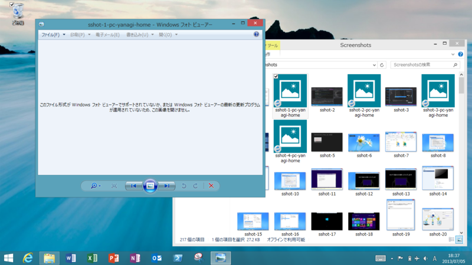
ただし、ある程度のバッファーを用意しておき、よく利用するファイルだけをキャッシュしておけば、そのデメリットは軽減できる（キャッシュありの間接同期）。これは所謂“80対20の法則”（全体の 20 ％ が利用頻度の 80 ％を占める）を利用した賢いやり方だが、メカニズムはキャッシュ管理の分だけ複雑になり、クライアントが不安定になる恐れがある。
新しい SkyDrive では、キャッシュあり（？）の間接同期（オンライン利用）（初期設定、詳細なオプションはなし）とファイル・フォルダごとの直接同期（オフライン利用）をユーザー側で切り替えられる。
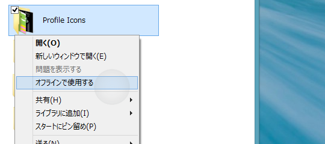
「エクスプローラー」の場合はコンテキストメニューから。
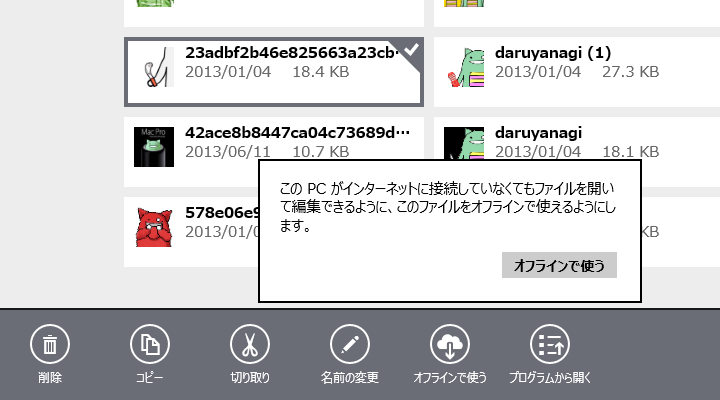
ストア アプリの場合はアプリバーから。
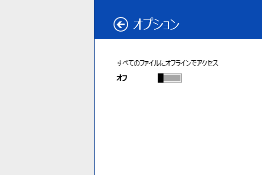
ストア アプリの［設定］チャームから、すべてのファイルをオフライン化することも可能。
32GB モデルの Surface RT など、ローカルストレージの空き容量に不安がある場合はオンライン利用が有効。ただし、ネットワークが必須なので、頻繁に利用するフォルダやファイルはあらかじめ手動でオフライン利用を有効にしておく必要がある。一方、大容量 HDD を搭載した比較的ストレージに余裕のある大型ノート PC やデスクトップ PC では、すべてのオフライン利用が有効だろう。
あと、注意というほどでもないのだが、オフライン利用とオンライン利用の切り替えはそれほど気楽に行えるものではない。とくにファイルの多いフォルダを切り替えると、アップロードやダウンロードに時間がかかり、その間（保留状態）は再度元に戻すことができない。
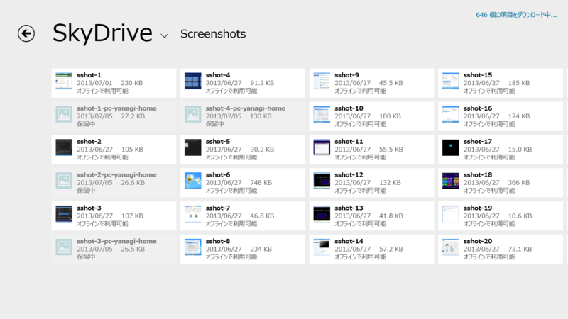
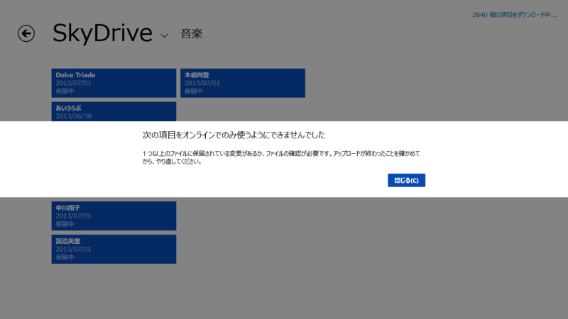
また、以上の記述は Windows 8.1 RT を元にしており、Windows 8.0 からアップデートした場合どうなるかは正確には把握していない。デスクトップ版「SkyDrive」がすでにインストールされている環境だとややこしそうだ。
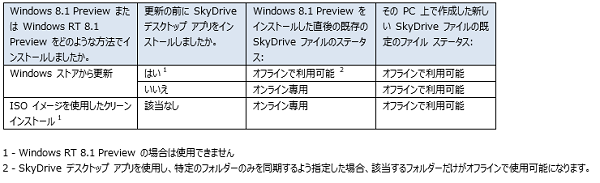
ちなみに SkyDrive には細かい制限事項（ファイル数や単体ファイルのサイズ、ファイルの名前などなど）があるのだけど、これについてはまだ検証できていないので、また機会を改めて。
同期プロセスはストア アプリで
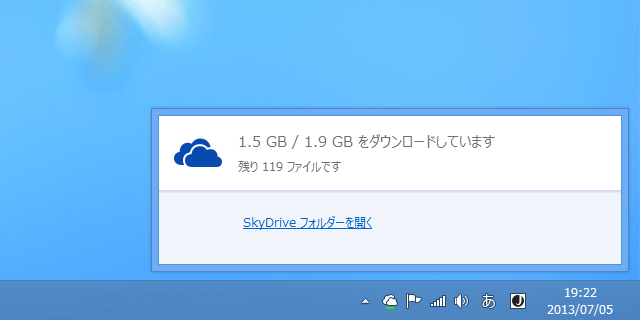
Windows 8.0 の SkyDrive では、タスクトレイアイコンから同期プロセスの進捗状況が確認できた。
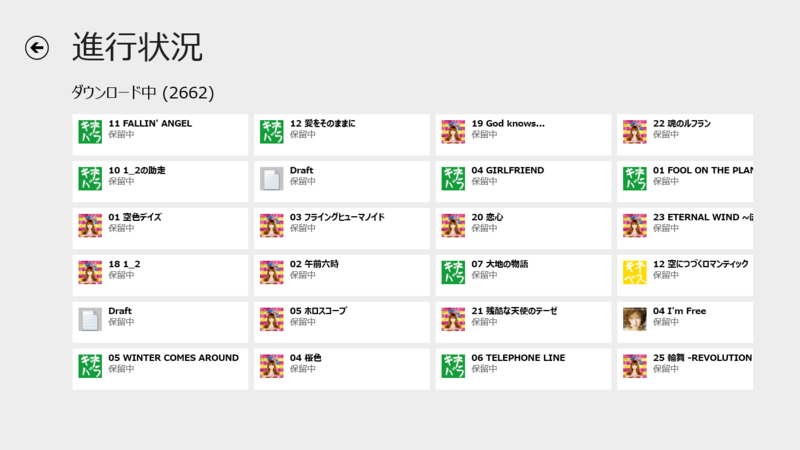
一方、Windows 8.1 の SkyDrive にはタスクトレイのユーザーインターフェイスがなく、Windows ストア アプリ「SkyDrive」がその役割を担う。これは評価が二分するだろう。ストア アプリは気軽ではないし、進捗状況の確認向けのインターフェイスではない。しかし、ダウンロード中のファイルやアップロード中のファイルがタイルで一覧できるのは評価できるかもしれない。タスクトレイのポップアップウィンドウよりは情報量が多い。
特権的な地位への懸念
このように、バックエンドであれ、設定画面であれ、ストア アプリであれ、Windows 8.1 の SkyDrive には一般のアプリよりも一つ抜きんでた特権的な地位が与えられているのがわかる。確かに、これのおかげで――とくに Windows RT は――便利になった。
しかし気になるのが、ほかのアプリケーションとの兼ね合いだ。
オンラインストレージサービスは腐るほどあり、互いに切磋琢磨してる。そのなかで SkyDrive だけが特権的な地位を占めている。これはほかのサービスにとって愉快なことではないだろう。下手すれば、往年のように独占禁止法違反で訴えられるかもしれない。
また SkyDrive よりも Dropbox などのほかのサービスを好むユーザーにとっても、あまり納得できる解決ではない。個人的には SkyDrive で満足しているが、機能面ではまだまだ Dropbox のほうが上だと感じるユーザーは多い。Microsoft 以外のプラットフォームではなおさらだ。
個人的には、デスクトップアプリやバックグラウンドアプリに対しても、なんらかの認定基準を設けてストアで公開できるようになればいいと思うが、なかなか難しいのだろうか。
次回予告
実は Widnows 8.1 の SkyDrive のルートフォルダは C:\Users\***\SkyDrive 固定で、変更できない。次回はこれを SD カードに移動させてみようかなと思う。あわせて、Windows 8.1 と SD カードドライブについても少し書きたい。